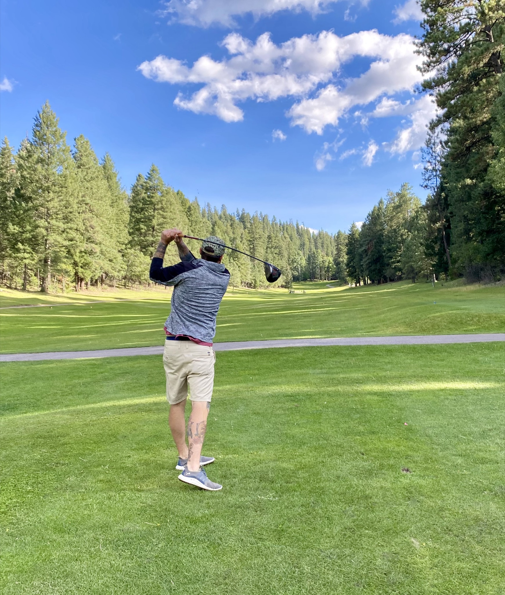

Cloudcroft Activities at a Glance
Cloudcroft works best when you treat it as a compact mountain base rather than a checklist town. The village itself is small. The range of things to do is not. In one day you can hike a Forest Service trail, look across Mexican Canyon, browse Burro Avenue, drive the Sunspot Scenic Byway, and end with dinner or a drink. The strongest 2026 activity mix falls into four buckets: easy in-town and near-town activities, active forest recreation, seasonal recreation and event weekends, and nearby half-day or full-day outings that expand the trip.
The easiest wins are the Mexican Canyon Trestle area, Burro Avenue, the Sacramento Mountains Museum, Osha Trail, and low-friction in-town recreation like pickleball or disc golf. The strongest active options are hiking, biking, trail running, disc golf, camping, and smaller-scale fishing. Winter adds Ski Cloudcroft and, if current operations hold, the ice-rink experience.
The biggest 2026 planning issue is access, not lack of things to do. Some campgrounds are seasonal. Some forest areas require same-day condition checks. Sunspot public access should not be assumed. The best Cloudcroft trip plans match your group, the weather, and how much effort you actually want.
Easy Wins
Mexican Canyon Trestle, Burro Avenue, Sacramento Mountains Museum, Osha Trail, and Zenith Park — high payoff, low effort.
Active Outdoors
Hiking, mountain biking, trail running, disc golf, camping, and fishing in the Lincoln National Forest.
Seasonal Recreation
Ski Cloudcroft and the ice rink in winter. Race weekends and festival events in summer and fall.
Nearby Outings
White Sands, the Space History Museum, Oliver Lee State Park, and the Sunspot Scenic Byway as half-day or full-day trips.
Ask yourself four questions first: short stop or full day? Kids, older relatives, or serious outdoor people? Low-effort scenic or active? Weather-proof or condition-dependent? Your answers shape the entire trip.
Best Bets If You Only Have One Day
- Walk or drive to the Mexican Canyon Trestle area and take a short trail or overlook stop.
- Hike Osha Trail or another close Forest Service trail.
- Spend time on Burro Avenue for shops, coffee, bakery, tea, or wine.
- Drive part or all of the Sunspot Scenic Byway, but verify current Sunspot access first.
- End at The Lodge, Cloudcroft Brewing, or another in-town stop for a meal or drink.
Every Major Activity in Cloudcroft
From mountain biking in the Lincoln National Forest to low-friction disc golf at Zenith Park, Cloudcroft offers a wider activity mix than most visitors expect. Here is the full landscape — each with who it suits, what it feels like, and what to verify before you go.
Biking
Mountain, Road & GravelOne of the better biking bases in southern New Mexico. Rim, Elk Canyon, and Fir trails for mountain riding. Highway 82 is a serious road-cycling corridor. High Altitude supports riders but is not doing rentals for the season — bring your bike.
Disc Golf
18-hole & Beginner 9-holeThe Cloudcroft Community Disc Golf Course is the main 18-hole round — wooded, free, and mountain-scale. The remodeled 9-hole Byron Ligon course at Zenith Park is the beginner-friendly par-3 option for families and casual players.
Pickleball
Six Public CourtsSix free outdoor courts at Zenith Park with an active local play community — Pickleball Addicts of Cloudcroft. One of the strongest low-friction activities in town. Court resurfacing was scheduled for early April 2026; verify current condition.
Fishing
Pond & Mountain WaterSilver Springs RV Park Trout Pond is the easiest family-friendly stop — one acre, stocked weekly, not catch-and-release, and staff will clean and bag your fish. Broader forest and stream fishing available with a valid NM license (12+).
Running & Trail Races
Three 2026 RacesA legitimate running destination with Osha Trail for easier efforts and Rim Trail for stronger runs. 2026 races: Trails & Rails (June 13), Cloudcroft Ultra (August 15), and Cactus to Cloud Sky Race (October 17).
Camping
Forest & RVSleepy Grass Campground opens May 15, 2026 — the closest practical Forest Service option. Pines Campground (24 sites, RVs up to 35 ft, also opens May 15) and Upper Karr Recreation Area round out the federal choices. Private options include 16 Springs and Camp Rio (Mayhill). Book Recreation.gov early.

Winter Recreation
Skiing & Ice RinkSki Cloudcroft remains the winter anchor, but conditions vary — the 2025–26 season closed March 7, 2026 due to warm weather and low snow. The James Sewell Ice Rink is part of the winter identity, but local reporting suggested 2025–26 would be the last natural outdoor rink season — verify before planning around it.
Arts & Culture
Galleries & TheaterMore culture than visitors expect: Off the Beaten Path, Cloudcroft Art Workshops, gallery clusters, and seasonal artist events. Cloudcroft Light Opera Company adds a local-theater layer when performance timing lines up.
Live Music
Brewery & BarsCloudcroft Brewing, The Distillery, and winery or bar settings support a practical but changing live-music scene. Timing matters — check local listings for your dates.

Golf
The Lodge CourseThe Lodge golf course remains one of the more destination-style leisure options in the area — a scenic mountain round tied to Cloudcroft’s historic resort property.
Scenic Drives
Byway & Forest RoadsThe Sunspot Scenic Byway (NM 6563) is the strongest “leave town and see the mountain” drive — 15 miles starting just south of Cloudcroft with stops like Haynes Canyon Vista. Fresnal Canyon Road (FR 162C) delivers panoramic Tularosa Basin overlooks. Sacramento Canyon backroads suit slower, unpackaged forest driving.

Burro Avenue Stroll
Shops, Galleries & Food StopsThe core “just be in town” activity. The Burro Street Exchange concentrates boutiques, galleries, jewelry, Southwest goods, tea, and wine. Works in any season, mixes naturally with coffee, bakery, and lunch stops — one of the best low-effort Cloudcroft activities.
Food & Drink Crawl
Slow Afternoon or EveningBuild the day around stops rather than one reservation: morning coffee at Black Bear Coffee and pastry at Burro Street Bakery, midday tea at Old Barrel Tea Company or a brewery stop, evening dinner at The Lodge / 1899, Cloudcroft Brewing, or Mad Jack’s BBQ.

White Sands & Nearby
Half-Day OutingsWhite Sands National Park, New Mexico Museum of Space History, Oliver Lee Memorial State Park, Alameda Park Zoo, and McGinn’s PistachioLand — all strong nearby half-day or full-day expansions of a Cloudcroft trip.
2026 conditions that matter: Lincoln National Forest entered Stage 1 fire restrictions on March 27, 2026, scheduled through Sept 30, 2026. The Bluff Springs recreation area, parking, toilets, and Trail 112 bridge are closed through Dec 31, 2026. Sunspot public access is conflicted across official pages — treat the Sunspot Scenic Byway as the scenic experience and do not build plans around observatory access.
Best Activities by Category
Best Easy Win
Mexican Canyon Trestle Vista — The iconic image of Cloudcroft and a worth-doing stop even if you only have an hour.
Best Family Outing
Osha Trail and Zenith Park — Easy walking, beginner disc golf, and pickleball all in one family-friendly cluster.
Best Active Morning
Rim Trail — For stronger runners, bikers, and hikers who want a real effort at elevation.
Best Low-Effort Stop
Burro Avenue — Walkable, weather-flexible, and the softest in-town sightseeing rhythm in Cloudcroft.
Best Half-Day Outing
White Sands National Park — The strongest nearby expansion of a Cloudcroft trip and a completely different landscape.
Best Winter Activity
Ski Cloudcroft — The winter anchor, with the ice rink as a secondary option if still operating.
Best Free Activity
Osha Trail, Trestle Vista, pickleball, and disc golf — All free and all high-value.
Best for Repeat Visitors
Biking, trail running, and camping — The activities that reward deeper exploration past the easy wins.
Best Scenic Drive
Sunspot Scenic Byway — Treat the byway itself as the activity. Public observatory access should not be assumed.
Practical Planning Notes
Altitude
Cloudcroft sits around 9,000 feet. Easy activities can still feel harder than expected. Hydrate, pace yourself, and ease into effort on day one.
Weather Swings
You can leave cool forest and reach hot basin quickly. Dress for the full range, not just Cloudcroft’s temperature. Afternoon weather shifts are common in summer.
Cell Service
Do not count on constant service outside town or deeper in the forest. Download maps and route notes before you head out.
Fire Restrictions
Check Lincoln National Forest official alerts and restrictions before hiking, camping, or planning long forest drives. Restrictions change with conditions.
Seasonal Closures
Campgrounds, recreation areas, and some forest sites are seasonal. Do not assume year-round access — verify opening windows for your dates.
Road Conditions
Mountain roads matter more than first-time visitors expect, especially in winter or shoulder seasons. Check before long forest drives.
Gear Needs
Bring more water, layers, and footwear than you think you need. High Altitude is the main in-town outdoor resource, but don’t count on renting a bike locally this season.
Reservation Timing
Book earlier than you think for holiday weekends, race weekends, peak color season, and Mountain Christmas Village dates. Recreation.gov is the strongest federal campground booking source.
What to Verify
Current closures, fire restrictions, campground openings, event timing, and whether the activity you want is actually operating during your visit.
Fire Restrictions 2026
Stage 1 restrictions forest-wide from March 27, 2026 through Sept 30, 2026 unless rescinded. Affects campfires, dispersed camping, and some recreation activities. Check the Lincoln National Forest alerts page for current status.
Bluff Springs Closure
The Bluff Springs recreation area, parking lot, toilets, and Trail 112 bridge are closed through Dec 31, 2026 unless rescinded. Plan alternate hiking and picnic destinations.
Town Hours & Rhythm
Cloudcroft is not a late-night town. Hours vary by shop and season, popular dinner spots can wait on busy weekends, and chain-style consistency isn’t the norm. Treat it as part of the charm and plan around it.
Best Activities for Your Group
First-Time Visitors
Mexican Canyon Trestle Vista, Burro Avenue, Osha Trail, White Sands National Park, and the Sacramento Mountains Museum — the classic introduction.
Families
Osha Trail, Zenith Park, beginner disc golf, pickleball, White Sands, and the ice rink in winter if operating.
Active Couples
Biking, running, moderate hiking, pickleball, and scenic drives paired with dinner in town.
Older Visitors
Burro Avenue, the museum, trestle vista, easy park time, and gallery browsing. Low-effort, high-character stops.
Serious Outdoor People
Biking, running, harder hiking, camping, and fishing with more planning. Cloudcroft rewards effort at elevation.
If You Only Have One Day
Osha Trail in the morning, Burro Avenue and lunch, trestle vista, a museum or gallery stop, and dinner in town.
Rainy / Low-Energy Day
The museum, galleries, shopping, coffee and bakery stops, and local theater or live music if timing lines up.
Day-Trippers from Alamogordo
Osha Trail, Burro Avenue, Mexican Canyon Trestle, a lunch, coffee, or brewery stop, and a partial Sunspot Scenic Byway drive — a full day without staying overnight.
Repeat Visitors & Second-Home Owners
Cabin-based weekends, slower food-and-drink circuits, seasonal event weekends, forest-road drives, and camp-oriented stays — doing less, on purpose.
The Bottom Line
Cloudcroft is not a one-attraction town. It is a mountain base with four strong activity buckets — easy in-town wins, active forest recreation, seasonal events, and nearby half-day outings. The best trips match the group, the weather, and how much effort you actually want to put in.
The easy wins deliver quickly: the Mexican Canyon Trestle, Burro Avenue, the Sacramento Mountains Museum, Osha Trail, and low-friction recreation at Zenith Park. The deeper rewards — biking, trail running, camping, and the race calendar — are waiting for repeat visitors and anyone who wants more than a scenic stroll.
The biggest planning issue is access, not lack of things to do. Campgrounds are seasonal, some forest areas need same-day checks, and Sunspot public access should not be assumed. Verify closures, fire restrictions, and event timing before you go — then enjoy the fact that Cloudcroft has more to offer than most visitors realize.
Ready to Explore Cloudcroft?
From the Mexican Canyon Trestle to the Rim Trail, from pickleball at Zenith Park to a half-day at White Sands — Cloudcroft rewards travelers who plan around conditions and match activities to their group.